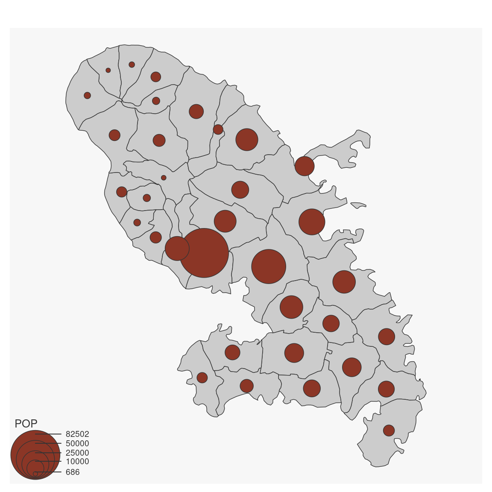
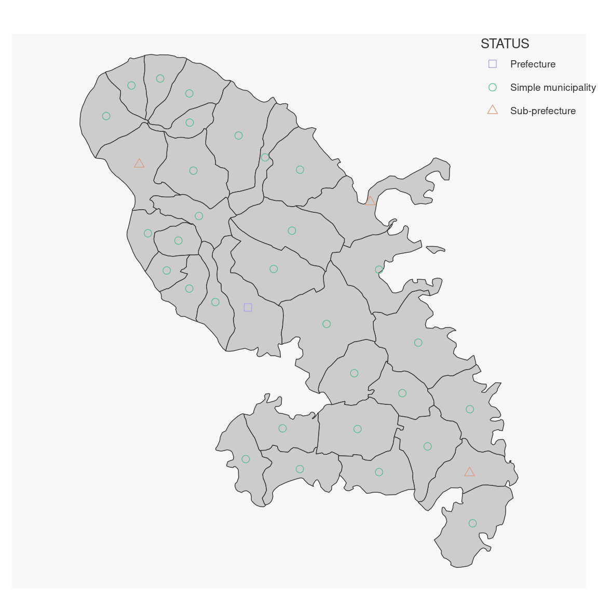
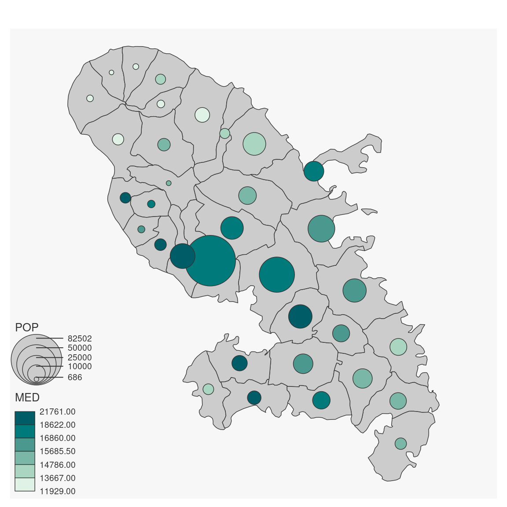

This is the main function of the package.
mf_map can be used to plot all types of maps.
The three main arguments are: x (sf object), var (variable to map), and
type (map type).
Relevant arguments and default values are detailed in specific functions.
Maps types:
base, base maps (mf_base);
prop, proportional symbols maps (mf_prop);
choro, choropleth maps (mf_choro);
typo, typology maps (mf_typo);
symb, symbols maps (mf_symb);
grad, graduated symbols maps (mf_grad);
prop_choro, proportional symbols maps with symbols colors based on a quantitative data classification (mf_prop_choro);
prop_typo, proportional symbols maps with symbols colors based on qualitative data (mf_prop_typo);
symb_choro, symbols maps with symbols colors based on a quantitative data classification (mf_symb_choro).
mf_map( x, var, type = "base", breaks, nbreaks, pal, inches, val_max, symbol, col, lwd_max, val_order, pch, cex, border, lwd, bg, col_na, cex_na, pch_na, leg_pos, leg_title, leg_title_cex, leg_val_cex, leg_val_rnd, leg_no_data, leg_frame, add, ... )
Arguments
| x | object of class |
|---|---|
| var | name(s) of the variable(s) to plot |
| type | one of "base", "prop", "choro", "typo", "symb", "grad", "prop_choro", "prop_typo", "symb_choro" |
| breaks | either a numeric vector with the actual breaks, or a classification method name (see mf_get_breaks) |
| nbreaks | number of classes |
| pal | a set of colors or a palette name (from hcl.colors) |
| inches | size of the biggest symbol (radius for circles, half width for squares) in inches. |
| val_max | maximum value used for proportional symbols |
| symbol | type of symbols, 'circle' or 'square' |
| col | color |
| lwd_max | line width of the largest line |
| val_order | values order, a character vector that matches var modalities |
| pch | pch for symbols |
| cex | cex for symbols |
| border | border color |
| lwd | border width |
| bg | background color |
| col_na | color for missing values |
| cex_na | cex for NA values |
| pch_na | pch for NA values |
| leg_pos | position of the legend, one of 'topleft', 'top','topright', 'right', 'bottomright', 'bottom', 'bottomleft', 'left' or a vector of two coordinates in map units (c(x, y)). If leg_pos is 'n' then the legend is not plotted. |
| leg_title | legend title |
| leg_title_cex | size of the legend title |
| leg_val_cex | size of the values in the legend |
| leg_val_rnd | number of decimal places of the values in the legend |
| leg_no_data | label for missing values |
| leg_frame | whether to add a frame to the legend (TRUE) or not (FALSE) |
| add | whether to add the layer to an existing plot (TRUE) or not (FALSE) |
| ... | further parameters from plot for sfc objects |
Value
x is (invisibly) returned.
Examples
mf_map(mtq, var = "POP", type = "prop")mf_map(mtq, var = "MED", type = "choro")mf_map(mtq, var = "STATUS", type = "typo")mf_map(mtq)mf_map(mtq, var = "STATUS", type = "symb")mf_map(mtq)mf_map(mtq, var = "POP", type = "grad")mf_map(mtq)mf_map(mtq)mf_map(mtq)